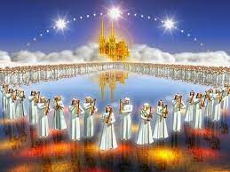

The vision of the New Jerusalem, a holy temple city descending from heaven — a symbol of divine presence and eternal worship. (Revelation 21:2)
The Second Coming heralds the fulfillment of prophecy and the establishment of God’s eternal kingdom centered around His temple. (Matthew 24:30)
Before the judgment seat of Christ, the temple remains a sacred place reflecting justice and mercy. (2 Corinthians 5:10)
The Book of Life, held in divine record, is connected to the faithful who worship in God’s temple. (Revelation 20:12)
The gates of the heavenly temple remain open day and night, inviting all to enter into God’s presence. (Revelation 21:25)
The Tree of Life by the river in the temple symbolizes healing and eternal life for the nations. (Revelation 22:2)
The Lamb on the throne within the temple nourishes the faithful and reigns in glory. (Revelation 7:17)
Enduring temptation faithfully in the temple brings the crown of life and blessing. (James 1:12)

A pure river of life flows from the temple throne, symbolizing spiritual renewal and grace. (Revelation 22:1)